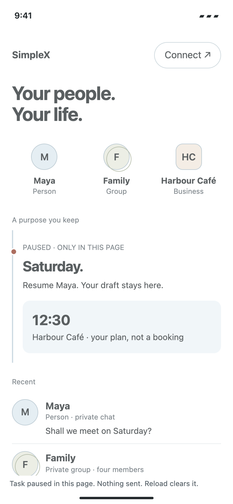
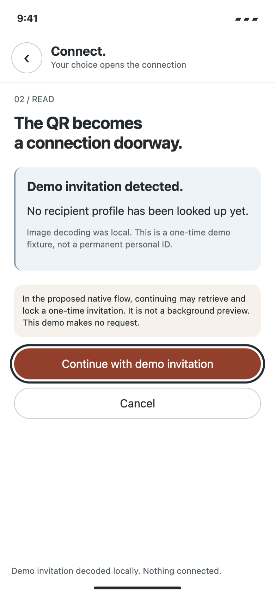
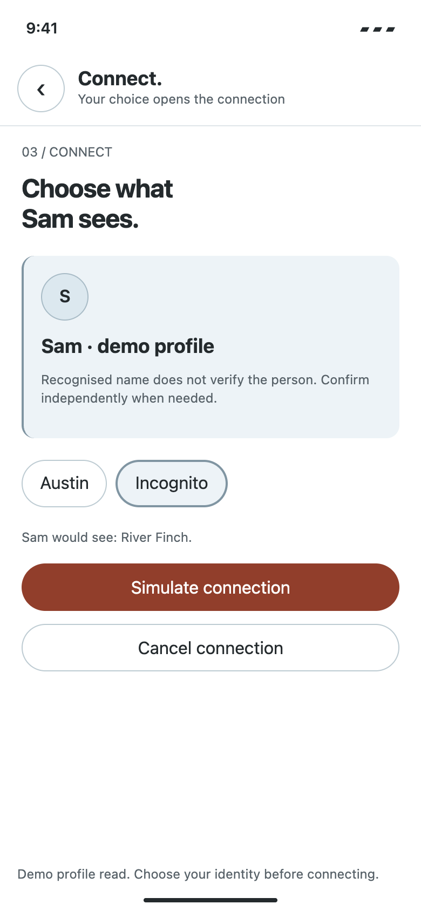
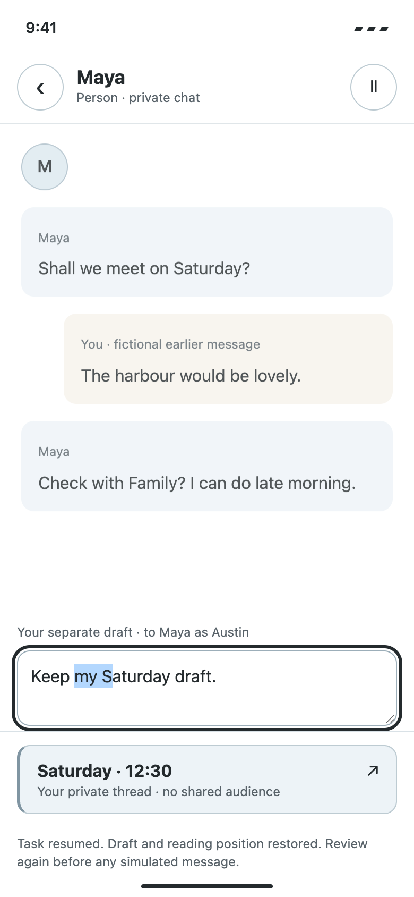

From anatomy to interface · 2028 exploration
Pause.
Return. Resume.
A QR connection detour that keeps your unfinished task within reach.
The octopus inspires connected local action and coherent return. Humans decide who they talk to and what they share.
01 / PAUSE

Your draft stays in this page; nothing is sent.
02 / READ LOCALLY

No second phone. Continue deliberately before profile retrieval.
03 / CHOOSE IDENTITY

A recognised name is not identity verification. Connection is simulated.
04 / RETURN AND RESUME

The task returns with its selection and focus. Review again before sending.